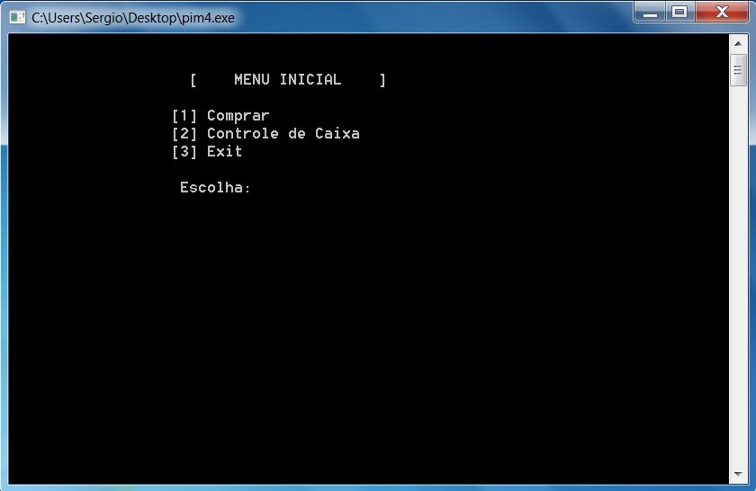
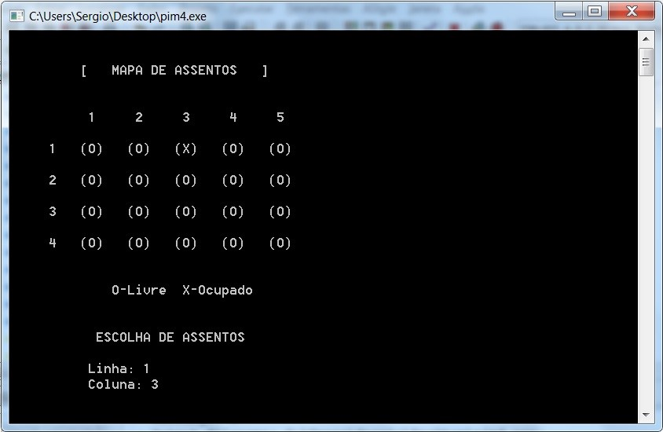
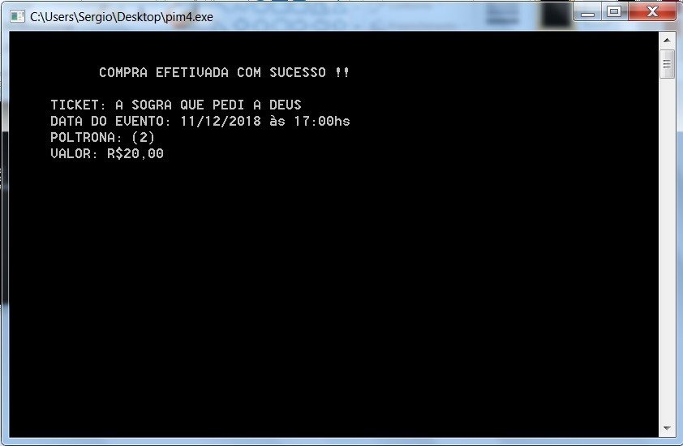
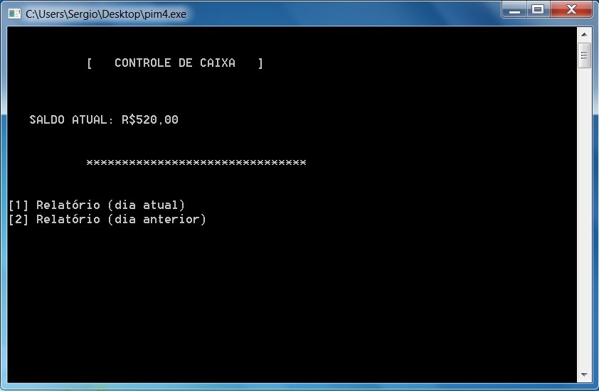
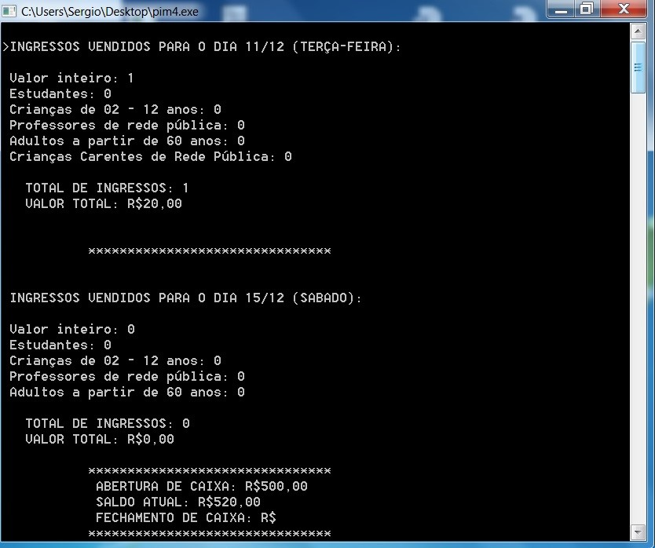

Sistema para Venda de Ingressos
Descrição do projeto
A proposta do trabalho é a criação de um sistema, utilizando a linguagem de programação C, que possibilite a venda de ingressos de teatro. O software foi desenvolvido através do programa DEV C++ como IDE (Ambiente de Desenvolvimento Integrado).
Após a inicialização do sistema, será solicitado que o usuário digite o valor constante na abertura do caixa. Assim que informado o valor, chegamos no Menu Inicial, que é a tela principal do sistema, onde estarão disponíveis as funções de compra, controle de caixa e sair do sistema.
Peças de teatro disponíveis
Após a escolha da peça, a próxima fase é a escolha de assento. O usuário poderá visualizar todas as poltronas disponíveis (O) e ocupadas (X). Caso todas as poltronas já estejam ocupadas, o usuário será alertado e enviado de volta ao menu inicial.
Emissão do ticket
Nessa tela será impresso o ingresso, com um resumo de toda a operação como nome da peça, horário, assento e valor.
Controle de Caixa
Caso o usuário digite a função [2] no menu inicial, o sistema vai abrir a janela do controle de caixa. Logo no topo é possível visualizar o saldo atual do dia, sendo a soma do fundo de caixa + ingresso vendidos.
Com esse sistema, é possível saber quantos ingressos (e quais tipos) foram vendidos para cada data peça. Está disponível também os valores totais arrecadados para cada dia. É só escolher um dos relatórios disponíveis.
 ← Voltar ao portfolio